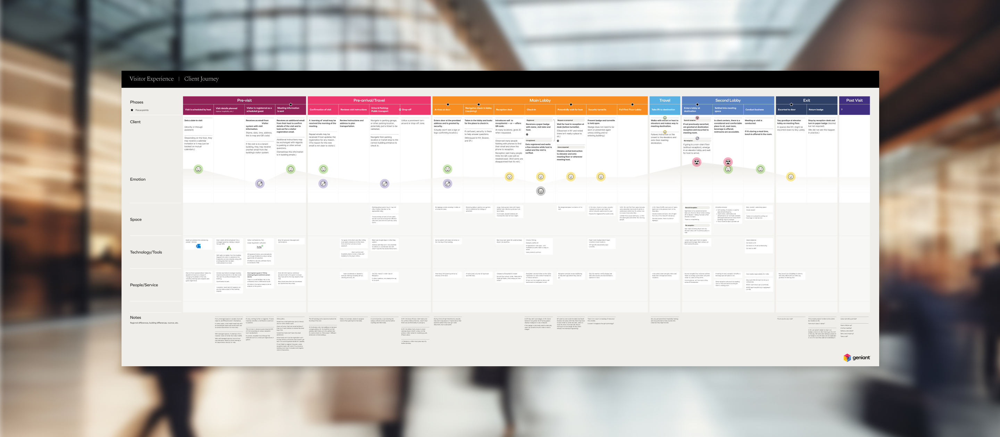
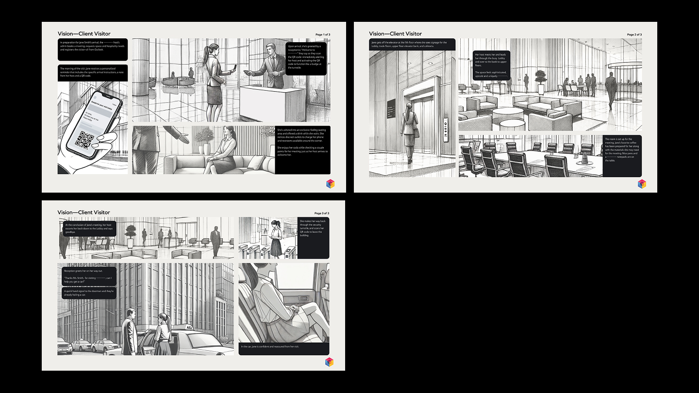

Visitor Experience Vision
Led the strategic synthesis and vision storytelling for a global visitor experience program at a Fortune 100 company with global offices—integrating research, space, digital, and service design into a premium vision.

A global Fortune 100 company with a premium brand recognized that their visitor experience wasn’t living up to it. Siloed teams, aging technology, and a demanding culture had created an experience full of missed opportunities—not because any one thing was broken, but because nothing was working together. They wanted to understand every moment of a visit and define what a world-class experience could look like.

I participated in research including office visits and interviews with stakeholders and team members across major cities—then stepped in to lead synthesis, recommendation framing, and final storytelling, collaborating with discipline experts across space, digital, and service design to shape a unified vision.